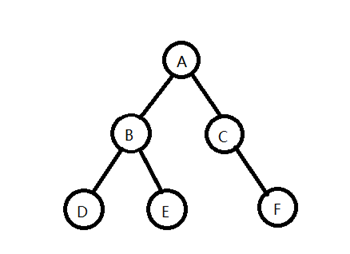

建立一棵含有n个结点的二叉树，采用二叉链表存储；
输出前序、中序、后序、、层序遍历该二叉树的遍历结果。
定义二叉树的数据类型——二叉树结点结构体BiNode。建立二叉链表可以采用扩展二叉树的一个遍历序列，例如前序序列，将扩展二叉树的前序序列由键盘输入，建立该二叉树的二叉链表存储。
简单起见，本实验假定二叉树的数据元素为char型
用模板类改写
#include<iostream> #include<cstdio> #include<cstdlib> #include<malloc.h> int MaxSize = 100; using namespace std; typedef char DataType; typedef struct BiNode { DataType data; struct BiNode *lchile,*rchild; }BiNode; BiNode *root; //创建拓展二叉树，#代虚结点 BiNode *Creat(BiNode *root)// cishu ///// { char ch; cin >> ch; if(ch == '#') root = NULL; else { root = (BiNode *)malloc(sizeof(BiNode)); root->data = ch; root->lchile = Creat(root->lchile); root->rchild = Creat(root->rchild); } return root; } //前序遍历 void PreOrder(BiNode *root) { if(root == NULL) return; else { cout << root->data << " "; PreOrder(root->lchile); PreOrder(root->rchild); } } //中序遍历 void InOrder(BiNode *root) { if(root == NULL) return; else { InOrder(root->lchile); cout << root->data << " "; InOrder(root->rchild); } } //后序遍历 void PostOrder(BiNode *root) { if(root == NULL) return; else { InOrder(root->lchile); InOrder(root->rchild); cout << root->data << " "; } } //层序遍历 void LevelOrder(BiNode *root) { BiNode *q = NULL,*Q[MaxSize]; int front = -1; int rear = -1; if(root == NULL) return; Q[++rear] = root; while(front != rear) { q = Q[++front]; cout << q->data << " "; if(q->lchile != NULL) Q[++rear] = q->lchile; if(q->rchild != NULL) Q[++rear] = q->rchild; } } int main() { BiNode *root = NULL; root = Creat(root); cout << "该二叉树的根节点是：" << root->data << endl; cout << endl; cout << "该二叉树的前序遍历是："; PreOrder(root); cout << endl; // cout << "该二叉树的根节点是：" << root->data << endl; cout << endl; cout << "该二叉树的中序遍历是："; InOrder(root); cout << endl; // cout << "该二叉树的根节点是：" << root->data << endl; cout << endl; cout << "该二叉树的后序遍历是："; PostOrder(root); cout << endl; // cout << "该二叉树的根节点是：" << root->data << endl; cout << endl; cout << "该二叉树的层序遍历是："; LevelOrder(root); cout << endl; return 0; } /* abd##e##c#f## 该二叉树的根节点是：a 该二叉树的前序遍历是：a b d e c f 该二叉树的中序遍历是：d b e a c f 该二叉树的后序遍历是：d b e c f a 该二叉树的层序遍历是：a b c d e f */
